Assignment 1
From the assignment:
Make a kit consisting of at least 30 instances of at least one unique part! The parts must have slots that press fit into the other parts in the kit! The parts must be laser cut out of cardboard! Your fit should be such that the parts do not come apart with a light shaking!
OutCome: Survives Shaking & 2-30 piece instances!

This image is a photo of the final cardboard model on its side. It sort of resembles a flower.
Process Documentation
Conjuring the Machine

I started from the basic of basic places: assembling the Falcon CR-Laser.
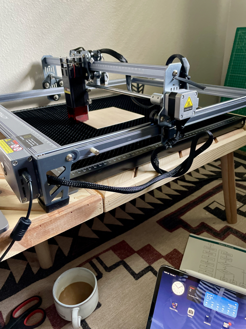It looked great.
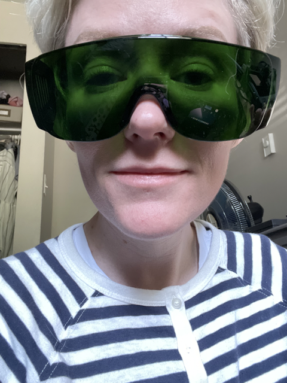I also looked great in my PPE. Let's go!.
It didn't work. It just moved with no laser. The instructions were really vague, but I did see something online about not needing the firmware. But given the circumstances, I looked into firmware and drivers. I usually don't need drivers on the MacBook Pro, and I know it already has a CH34X, so I went for the firmware from the company.
Trasferred the firmware to the microSD, put the microSD into the machine, and turned it on. Beeping. Lots of beeping. I didn't understand why until (after more online research in random forums) that the beeping was indicative of the firmware installing and it wouldn't stop until it was finished. Relieved to know I was not the only person to make this error, I power cycle to reset, try again, and let the beeping go until it finally stopped after 5 minutes.
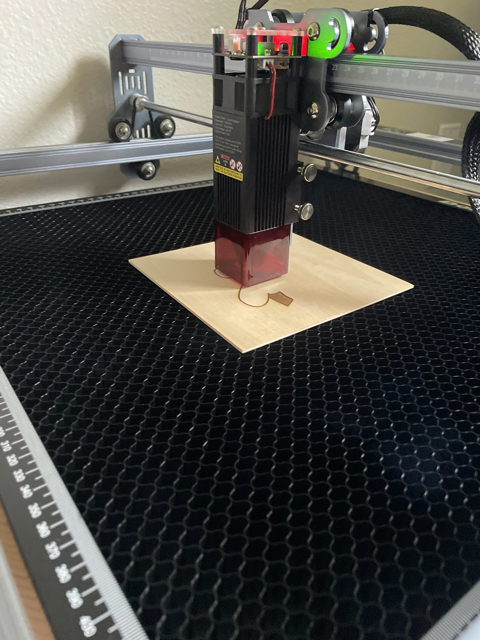Finally it is working!
Learning How to Operate
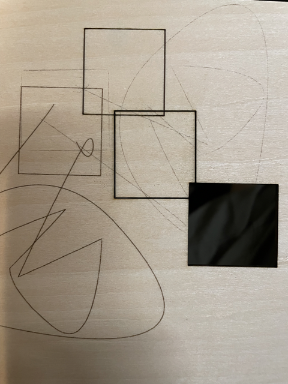I started in Lightburn by just making some squiggles and futzing with the speed, power, and pass count. I started with 100 speed, 20% power, and 1 pass. Messing with these settings, I found I could cut through wood at 85 speed, 90% power, and 15 passes - it was overkill, and I stopped the maching. I didn't tinker further with the wood, but I suspect I could have achieved the same result with different settings.
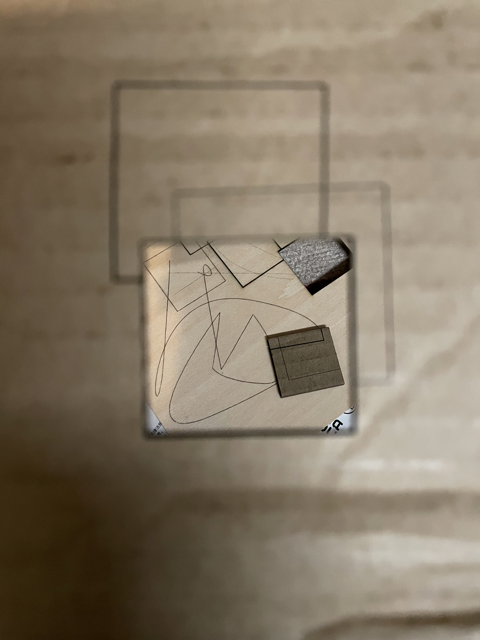 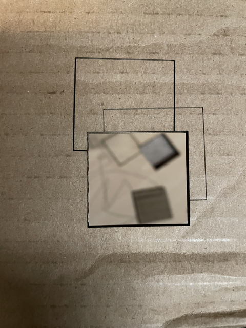Moving onto cardboard, I assummed the setting would be lower because it was a less dense material. I started at 70 speed, 70% power, and 3 passes. It wasn't enough. I bumped it up to 5 passes. Still not enough. I finally cut through at 70 speed, 70% power, and 10 passes. Once I achieved breaking through, I did not try other settings.

The recommended software with the CR-Laser is Lightburn and LaserGBRL. LaserGBRL only works with Windows (unless I wanted to run a virtual machine and I did not). Lightburn has a very intuitive GUI. I quickly made the images used for wood and cardboard cutting experiments. Now I wanted to determine how wide my gaps for press-fit needed to be. I tried 2mm and 3mm with a square to press the piece onto.
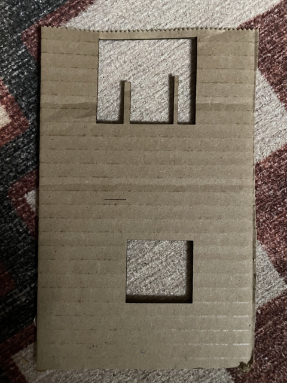The setting I determed earlier cut through perfectly.
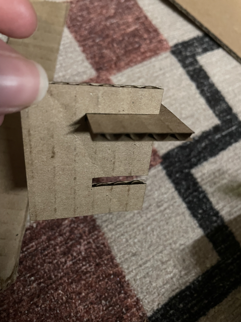...and by fortune, the 2mm option fit snuggly. Time to start making!!
Finally Starting the Assignment
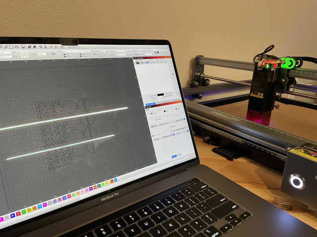In my household, my children by me lots of legos. Recently, because I decided fake flowers that looked real was ridiculous, I started building fake flowers with the lego kits and putting them all over my house. This inspired me to try and build a press kit for a flower. Starting simply, I started with circles to build a basic flower.
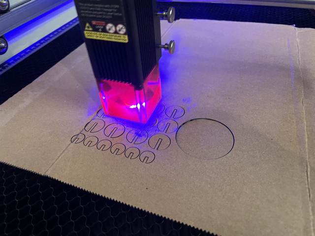 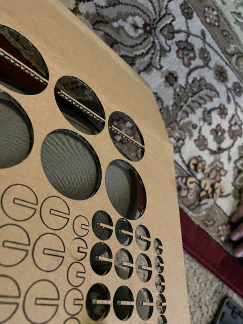 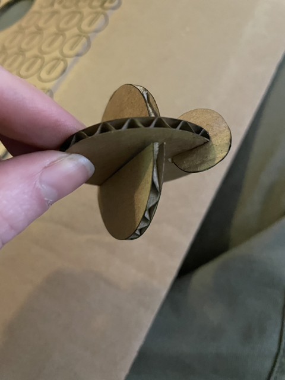Ran smoothly. I popped some of the pieces out for trial, and felt really good about my exploratory pressing together-ing.
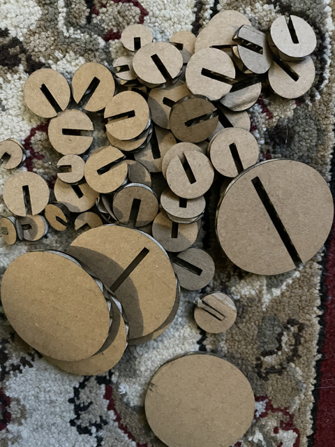 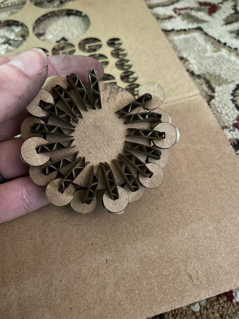I was commited. I carefully put together my first flower form. I decided I wanted more of the medium circles perpendicular to the first flower form.
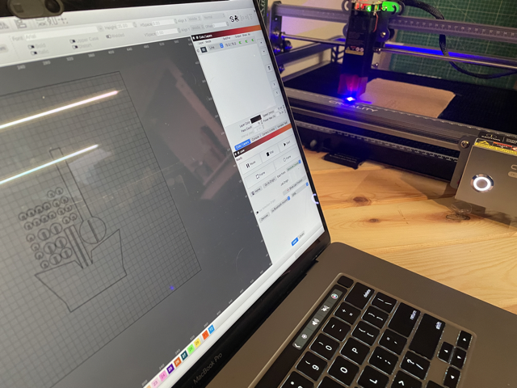 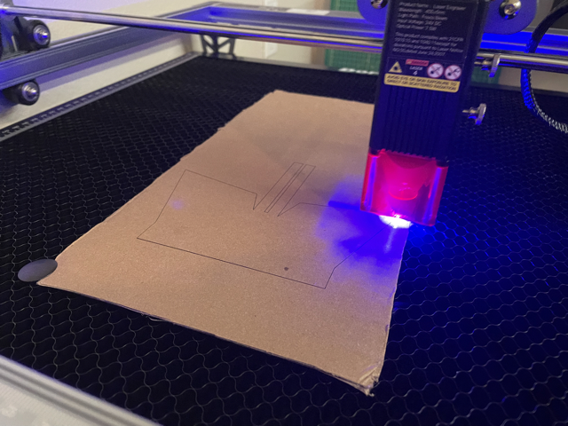 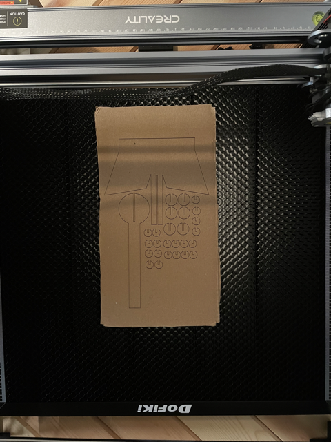I created a circular piece with a stem and a pot with flower piece to press fit into the stem. I also cut out more circles to make 30 medium and 30 small circular bits.
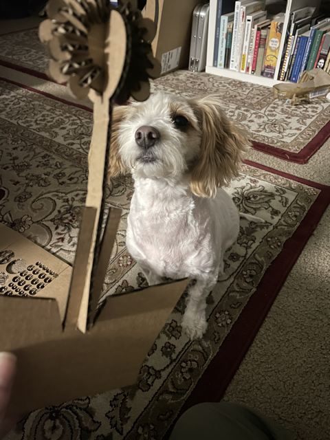My dog immediately notices this flower is a failure. I assumed the 2mm gap width would hold at any length. I was wrong, the longer the gap, the more the ends would flare.
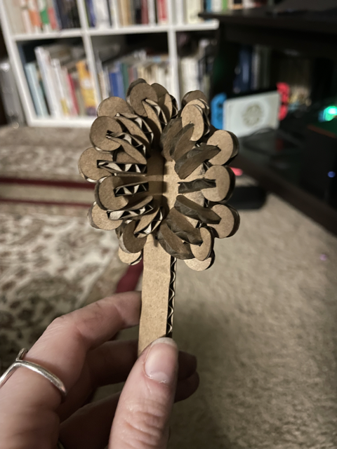In a project, we have three constraints: resounces, time, and scope. I had boundless resources. Machine + computer + software +cardboard for days. I had limited very limited time. My laser cutter didn't arrive until Tuesday, and I needed to finish before class on Wednesday at 12p so I could attend another class before the deadline. So scope had to be prunned. I chose to keep it at the stem. This would free up my nest day for documentation:)
Fin!
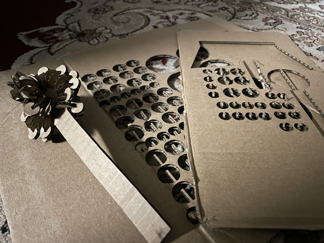I learned so much. Operating and understanding how to interface with these machines is my goal for this class, and I feel ramped up because of the challenges faced. For next time: I bought a hood/casing with a fan. I had lots of ventilation and a mask, but it wasn't enough. Need more PPE. I also want more goggles for my family. Figuring out how to start with Illustrator and transfer to lightburn would be a good workflow improvement. Because I have to work offline with this machine, I'm wondering if I can find a free software that converts SVGs to gcode/gc files the cutter will recognize.